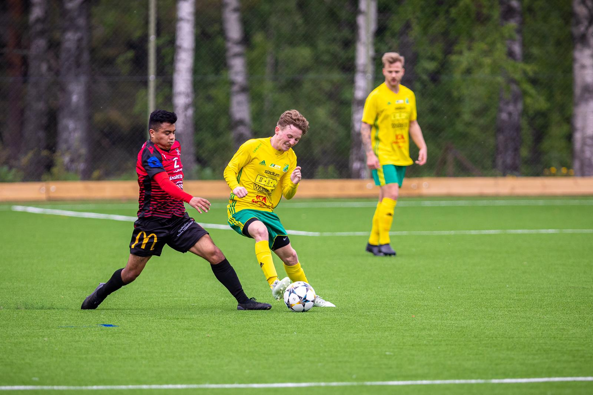

My name is Eduardo Duque, I am 26 years old and will be a certified python programmer after these next 10 weeks(hopefully, an employed one by the end of the year). I was born in Los Angeles, CA but raised in San Diego, CA in the city of San Marcos.
I love trying new foods, traveling, exercising and learning new things. I am the oldest of three siblings by 9+ years! My brother is 17 and my two sisters are 16 and 15, they might be the reason I sometimes feel really old lol.
Some of my favorite foods are pupusas, tacos, and almost anything seafood(ceviche, poke, sushi-to name a few)! If you ever find yourself in Oahu, the poke at Ono Seafood(pictured below) is to die for and worth the visit!!
I've always said I've wanted to learn how to code and I felt it was finally time for me to take action. So far, coding has been one of the most challenging things to learn, but I love that aspect about it. It makes seeing the code run correctly in the terminal, that much more exciting!
All in all, I am excited to be here and be a part of Coding Temple on my journey to becoming a software developer!
Traveling
Can wanderlust be addictive?Champion's League Night at Camp Nou
Back in 2015-16 I was living in Sinaloa, Mexico for 8 months and this unknowingly began my need for travel!
I have been fortunate enough to visit some of the most beautiful places around the world, explore wondrous sites, and meet some extraordinary people! I also got the opportunity to indulge in some delicious foods!
One of my dreams is to live a nomadic lifestyle, but having to worry about finances or returning home to save money really hindered that idea.
I do hope that becoming a software developer will help make this dream a reality and continue to let me explore this beatiful planet we all call home!
Teotihuacan, Mexico
Dublin, Ireland
Mural in Rejkjavic, Iceland
Cruyff Arena, Amsterdam
Oahu, HI
Hobbies
Soccer, Surf & Jiu Jitsu.
Soccer has been a big part of my life, I started playing at the age of 6 and was fortunate enough to have the sport bless me with great experiences. I don't play competitively anymore, but I still enjoy going out to the field and having the ball at my feet or playing pick up matches with friends!
One of my other favorite hobbies is surfing! Challenging in its own way, it’s something that has helped me grow and has let me branch out and explore other interests(playing one sport for so long can take its toll).
I started learning with one of my best friends, one day we both said we wanted to learn and once that happened we didn’t look back! His sister had some boards in his garage, we went out to buy our wetsuits and hit the water right away.
Looking like a fool, playing in the white water is where my love for surfing began. I also want to take a quick moment and shoutout Barefoot Surf, which is where I learned a majority of the basics, I would spend some time every day just watching videos over and over the first few weeks I started.
Same goes for my best friend, who now even shapes, paints AND glasses his own custom boards. If you are ever planning a trip to sunny San Diego or just want a custom board to hang in your room, send him a message!
Earlier this year, I got the opportunity to try jiu-jitsu. It was something I had always wanted to learn and so I told myself to just sign up. I enjoyed the handful of classes I attended and was hoping to stick with it.
Unfortunately, I had to let go of it after quickly realizing that it wouldn't work with the current work schedule I had(thanks Bezos for making me work so damn much-.-). Hopefully, once I find a better work-life balance, I'll be able to start attending some classes again!

Match day pic with the classic game faceMy first and only Jacobsweg original
One of the reasons I chose to become a software developer is for the learning aspect. The industry is constantly changing and having you be up to date with all the new technologies as we progress, this demands you to stay on top of things and continuously push yourself to learn.
I’m also determined to make my dreams of becoming a digital nomad to life. It will let me immerse myself in another culture and new experiences, while not having to worry about running out of money or days on my travel visa.
Lastly,(this is my number one reason) it gives me the ability to CREATE!! No longer will I have those moments where I say, ”that would be a good app/website,” and just leave it at that. I now will have the power to bring any of my ideas to life and that gets me even more excited to pursue this career!
Contact Me
Please contact me with questions, comments, job opportunities, etc.